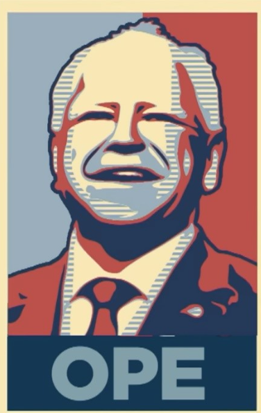

På 4chan giver anonymiteten brugerne mulighed for at udtrykke sig uden risiko for konsekvenser, hvilket skaber et miljø, hvor ekstreme holdninger trives og styrker fællesskabet. Dette gør platformen til et sted, hvor radikale politiske synspunkter spredes og forstærkes, da brugerne støtter hinanden i deres synspunkter.


A gay retard is trying to ban guns in one of the most anti-gun states Anonymous 10/20/24(Sun)23:36:48 No.1354932